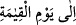
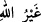
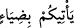
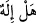
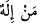
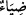
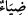
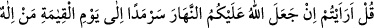
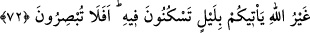

Çünkü güneşin doğmasıyla gecenin gitmesi ve bunun sağladığı faydalar; gündüzün gidip
gecenin girmesiyle sağlanan faydadan daha çoktur. Nitekim Burhânü’l-Kur’ân’da bu
şekilde kaydedilmiştir. “__WORD__ (kıyamete kadar)” ifâdesi, güneşin yer altında sükûna
erip yerleşmesine veya gözle görülmeyen başka bir ufkun etrafına kaydırılmasına kadar,
demektir.
“Allah’tan başka size bir ışık getirecek tanrı kimdir?” Allah’tan başka size ışık
getirecek tanrı kimdir? Yani kemal ve kudretiyle Allah’tan başka gerçek ilah kimdir?
“__WORD__ (Allah’tan başka)” ; “__WORD__ (tanrı)” kelimesinin birinci sıfatı; “__WORD__ (size bir
ışık getirecek)” cümlesi ise ikinci sıfatıdır. Bu cümlede, sıfatın ortadan kalkmasıyla
mevsûfun da ortadan kalkmasının kasdedilmesi; muhâtabı susturma ve ilzâm içindir. Ve
yine onların “Allah’dan başka ilâhlar olduğu” şeklindeki iddiâlarını ilzâm için “__WORD__(bir ilâh var mıdır?)” denmemiş; “__WORD__ ilah kimdir?)” ifâdesi kullanılmıştır. “__WORD__
kelimesindeki “ba” harf-i cerri, ta’diye mânâsınadır. Size aydınlık/ışık getirir. Yani,
maîşetinizi elde ettiğiniz aydınlık günü yarattı.
“Hâlâ işitmeyecek misiniz?” Bu hak kelâmını düşünerek ve basîretle dinlemiyorlar
mı? Ta ki ona boyun eğsinler, kabullenip itâat etsinler ve gereğince amel etsinler.
Böylece Allah’ı birleyip tevhide gelsinler.
Âyetin “Hâlâ işitmeyecek misiniz?” şeklindeki bir cümle ile bitmesi, yukarıda zikri
geçen “gece”ye nisbetledir; yoksa “__WORD__ ışığa nisbetle değildir.
Bazıları demiştir ki: İşitme, ışıkla birleştirilmiştir. Çünkü işitme, görmenin idrak
etmediğini idrak eder, kavrar. Yâni aklın “işitme” organından istifâde etmesi, “görme”
organından yararlanmasından daha fazladır.
72. De ki: Söyleyin bakalım, eğer Allah üzerinizde gündüzü ta kıyamet gününe
kadar aralıksız devam ettirse, Allah’tan başka, istirahat edeceğiniz geceyi size
getirecek tanrı kimdir? Hâla görmeyecek misiniz?
“De ki:” bana haber verin ve “söyleyin bakalım, eğer Allah üzerinizde gündüzü”
gecesi olmayacak şekilde, güneşi semânın ortasında tutarak veya onu yer üzerindeki
yörüngesinde hareket ettirerek “ta kıyamet gününe kadar aralıksız devam ettirse,”
yâni gece yok olup devamlı gündüz olsa; “Allah’tan başka,” meşguliyet
yorgunluklarından kurtulup “istirahat edeceğiniz geceyi size getirecek tanrı kimdir?”
Göz sâhibi hiçbir kimseye gizli kalmayan bu apaçık menfaatları ve nimetleri “hâla
görmeyecek misiniz?”
Allah Teâlâ’nın, âyette, “__WORD__ (ışık)”ı zikrederken “onda tasarruf ettiğiniz vb. hususlar”